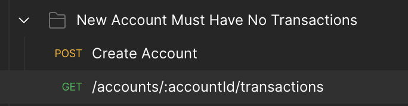
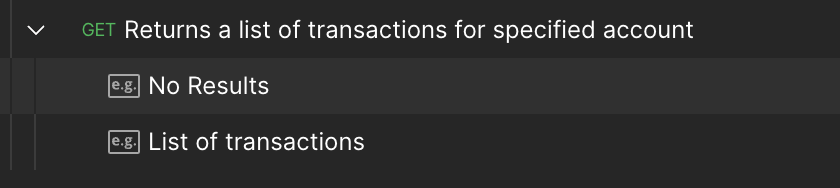
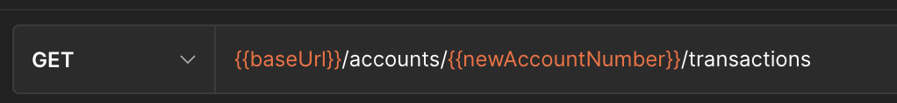
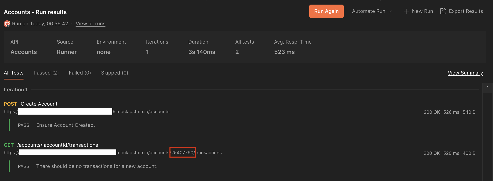

<!DOCTYPE html>


<html lang="en">
  

    <head>
      <meta charset="utf-8" />
       
      <meta name="keywords" content="agile, tdd, software engineering" />
       
      <meta
        name="viewport"
        content="width=device-width, initial-scale=1, maximum-scale=1"
      />
      
      <title>Contract Testing with Postman |  nick dot blog</title>
  <meta name="generator" content="hexo-theme-ayer">
      
      <link rel="shortcut icon" href="/favicon.ico" />
       
<link rel="stylesheet" href="/dist/main.css">

      
<link rel="stylesheet" href="/css/fonts/remixicon.css">

      
<link rel="stylesheet" href="/css/custom.css">
 
      <script src="https://cdn.staticfile.org/pace/1.2.4/pace.min.js"></script>
       
<!-- Global site tag (gtag.js) - Google Analytics -->
<script async src="https://www.googletagmanager.com/gtag/js?id=G-KXJW9BVBJ4"></script>
<script>
  window.dataLayer = window.dataLayer || [];
  function gtag(){dataLayer.push(arguments);}
  gtag('js', new Date());
  gtag('config', 'G-KXJW9BVBJ4');
</script>

 

      <link
        rel="stylesheet"
        href="https://cdn.jsdelivr.net/npm/@sweetalert2/theme-bulma@5.0.1/bulma.min.css"
      />
      <script src="https://cdn.jsdelivr.net/npm/sweetalert2@11.0.19/dist/sweetalert2.min.js"></script>

      <!-- mermaid -->
      
      <style>
        .swal2-styled.swal2-confirm {
          font-size: 1.6rem;
        }
      </style>
    <link rel="alternate" href="/atom.xml" title="nick dot blog" type="application/atom+xml">
</head>
  </html>
</html>


<body>
  <div id="app">
    
      
    <main class="content on">
      <section class="outer">
  <article
  id="post-contract-testing-postman"
  class="article article-type-post"
  itemscope
  itemprop="blogPost"
  data-scroll-reveal
>
  <div class="article-inner">
    
    <header class="article-header">
       
<h1 class="article-title sea-center" style="border-left:0" itemprop="name">
  Contract Testing with Postman
</h1>
 

      
    </header>
     
    <div class="article-meta">
      <a href="/2023/04/20/contract-testing-postman/" class="article-date">
  <time datetime="2023-04-20T04:17:02.000Z" itemprop="datePublished">2023-04-20</time>
</a> 
  <div class="article-category">
    <a class="article-category-link" href="/categories/Software-Engineering/">Software Engineering</a>
  </div>
  
<div class="word_count">
    <span class="post-time">
        <span class="post-meta-item-icon">
            <i class="ri-quill-pen-line"></i>
            <span class="post-meta-item-text"> Word count:</span>
            <span class="post-count">2k</span>
        </span>
    </span>

    <span class="post-time">
        &nbsp; | &nbsp;
        <span class="post-meta-item-icon">
            <i class="ri-book-open-line"></i>
            <span class="post-meta-item-text"> Reading time≈</span>
            <span class="post-count">12 min</span>
        </span>
    </span>
</div>
 
    </div>
      
    <div class="tocbot"></div>


  
    <div class="article-entry" itemprop="articleBody">
       
  <p>I’m giving some training next week on Contract Driven Development using Postman. There’s been a couple of hurdles to overcome to get to a workflow that I feel is efficient so I thought I’d share in the hopes that a) this might help someone else or b) someone could point out a better way to do this. </p>
<h1 id="The-Scenario"><a href="#The-Scenario" class="headerlink" title="The Scenario"></a>The Scenario</h1><p>For the training we are using a simplistic banking interface defined using OpenApi. The intention is to show how as a Consumer, Contract-Driven Development helps us to safely move forward whilst another team is still implementing the actual service. </p>
<p>The service itself is simple. Its an Accounts service with the following endpoints:</p>
<table>
<thead>
<tr>
<th>Action</th>
<th>Path</th>
<th>Description</th>
</tr>
</thead>
<tbody><tr>
<td>GET</td>
<td>accounts</td>
<td>Returns the list of accounts for the customer.</td>
</tr>
<tr>
<td>GET</td>
<td>accounts&#x2F;{accountId}&#x2F;transactions</td>
<td>Returns the list of transactions for the specified account.</td>
</tr>
<tr>
<td>POST</td>
<td>accounts</td>
<td>Create a new Account.</td>
</tr>
</tbody></table>
<h1 id="Creating-a-failing-test"><a href="#Creating-a-failing-test" class="headerlink" title="Creating a failing test"></a>Creating a failing test</h1><p>The first thing I’d like to test is the Account creation. As per the OpenApi spec I need to POST the following request:</p>
<figure class="highlight javascript"><table><tr><td class="gutter"><pre><span class="line">1</span><br><span class="line">2</span><br><span class="line">3</span><br><span class="line">4</span><br></pre></td><td class="code"><pre><span class="line">&#123;</span><br><span class="line">    <span class="string">&quot;AccountType&quot;</span>:<span class="string">&quot;Savings Account&quot;</span>,</span><br><span class="line">    <span class="string">&quot;Currency&quot;</span>: <span class="string">&quot;ZAR&quot;</span></span><br><span class="line">&#125;</span><br></pre></td></tr></table></figure>

<p>and expect the following result:</p>
<figure class="highlight javascript"><table><tr><td class="gutter"><pre><span class="line">1</span><br><span class="line">2</span><br><span class="line">3</span><br><span class="line">4</span><br><span class="line">5</span><br><span class="line">6</span><br></pre></td><td class="code"><pre><span class="line">&#123;</span><br><span class="line">    <span class="string">&quot;AcccountNumber&quot;</span>: <span class="string">&quot;61779244&quot;</span>,</span><br><span class="line">    <span class="string">&quot;AccountType&quot;</span>: <span class="string">&quot;Savings Account&quot;</span>,</span><br><span class="line">    <span class="string">&quot;Currency&quot;</span>: <span class="string">&quot;ZAR&quot;</span>,</span><br><span class="line">    <span class="string">&quot;Balance&quot;</span>: <span class="number">0.00</span></span><br><span class="line">&#125;</span><br></pre></td></tr></table></figure>

<p>I start by setting up this request&#x2F;response in Postman and pointing it to a Postman Mock server. As there is nothing configured on the Mock Server yet when I run my request I receive:</p>
<figure class="highlight javascript"><table><tr><td class="gutter"><pre><span class="line">1</span><br><span class="line">2</span><br><span class="line">3</span><br><span class="line">4</span><br><span class="line">5</span><br><span class="line">6</span><br><span class="line">7</span><br><span class="line">8</span><br><span class="line">9</span><br></pre></td><td class="code"><pre><span class="line"></span><br><span class="line">&#123;</span><br><span class="line">    <span class="string">&quot;error&quot;</span>: &#123;</span><br><span class="line">        <span class="string">&quot;name&quot;</span>: <span class="string">&quot;mockRequestNotFoundError&quot;</span>,</span><br><span class="line">        <span class="string">&quot;message&quot;</span>: <span class="string">&quot;Double check your method and the request path and try again.&quot;</span>,</span><br><span class="line">        <span class="string">&quot;header&quot;</span>: <span class="string">&quot;No matching requests&quot;</span></span><br><span class="line">    &#125;</span><br><span class="line">&#125;</span><br><span class="line"></span><br></pre></td></tr></table></figure>

<p>See <a target="_blank" rel="noopener" href="https://learning.postman.com/docs/designing-and-developing-your-api/mocking-data/setting-up-mock/">here</a> for help on configuring a Mock Server with Postman.</p>
<h1 id="Schema-validation"><a href="#Schema-validation" class="headerlink" title="Schema validation"></a>Schema validation</h1><p>The first thing to get working is the ability to verify that any responses we receive are valid as per the OpenApi specification. Whilst Postman does this out of the box it does not generate a test failure. We need failing tests so that we can run our contract tests as part of the CI&#x2F;CD pipeline. </p>
<p>In order to validate responses we need a reference to the OpenApi spec itself. To to this we use the Postman API to download the spec and save it as a variable. There’s some gymnastics here as we must first convert our OpenApi document from YAML to JSON which requires an external library - js-yaml. </p>
<p>You could avoid this by putting the OpenAPI in JSON format directly into the variable but then you’ll need to remember to update it when the spec changes.</p>
<figure class="highlight javascript"><table><tr><td class="gutter"><pre><span class="line">1</span><br><span class="line">2</span><br><span class="line">3</span><br><span class="line">4</span><br><span class="line">5</span><br><span class="line">6</span><br><span class="line">7</span><br><span class="line">8</span><br><span class="line">9</span><br><span class="line">10</span><br><span class="line">11</span><br><span class="line">12</span><br><span class="line">13</span><br><span class="line">14</span><br><span class="line">15</span><br><span class="line">16</span><br><span class="line">17</span><br><span class="line">18</span><br><span class="line">19</span><br><span class="line">20</span><br><span class="line">21</span><br><span class="line">22</span><br><span class="line">23</span><br><span class="line">24</span><br><span class="line">25</span><br><span class="line">26</span><br><span class="line">27</span><br></pre></td><td class="code"><pre><span class="line"></span><br><span class="line"><span class="keyword">const</span> schema_url = <span class="string">&#x27;https://api.getpostman.com/apis/API ID/versions/VERSION ID/schemas/SCHEMA ID&#x27;</span>;</span><br><span class="line"></span><br><span class="line"><span class="keyword">const</span> postRequest = &#123;</span><br><span class="line">  <span class="attr">url</span>: schema_url,</span><br><span class="line">  <span class="attr">method</span>: <span class="string">&#x27;GET&#x27;</span>,</span><br><span class="line">  <span class="attr">header</span>: &#123;</span><br><span class="line">    <span class="string">&#x27;Content-Type&#x27;</span>: <span class="string">&#x27;application/json&#x27;</span>,</span><br><span class="line">    <span class="string">&#x27;X-Api-Key&#x27;</span>: pm.<span class="property">variables</span>.<span class="title function_">get</span>(<span class="string">&#x27;apiKey&#x27;</span>)</span><br><span class="line">  &#125;</span><br><span class="line">&#125;;</span><br><span class="line"></span><br><span class="line">pm.<span class="title function_">sendRequest</span>(<span class="string">&quot;https://cdnjs.cloudflare.com/ajax/libs/js-yaml/4.1.0/js-yaml.min.js&quot;</span>, <span class="function">(<span class="params">err, res</span>) =&gt;</span> &#123;</span><br><span class="line"></span><br><span class="line">   <span class="built_in">eval</span>(res.<span class="title function_">text</span>()); <span class="comment">//Load the library.</span></span><br><span class="line"></span><br><span class="line">    pm.<span class="title function_">sendRequest</span>(postRequest, <span class="function">(<span class="params">error, response</span>) =&gt;</span> &#123;</span><br><span class="line">        <span class="keyword">if</span>(!error)&#123;</span><br><span class="line">            <span class="keyword">var</span> schema = response.<span class="title function_">json</span>().<span class="property">schema</span>.<span class="property">schema</span>;</span><br><span class="line">            <span class="keyword">var</span> yaml = <span class="variable language_">this</span>.<span class="property">jsyaml</span>.<span class="title function_">load</span>(schema);</span><br><span class="line">            pm.<span class="property">variables</span>.<span class="title function_">set</span>(<span class="string">&#x27;accountsOpenApi&#x27;</span>, <span class="title class_">JSON</span>.<span class="title function_">stringify</span>(yaml,<span class="literal">null</span>, <span class="number">2</span>));</span><br><span class="line">        &#125;</span><br><span class="line">        <span class="variable language_">console</span>.<span class="title function_">log</span>(error ? error : <span class="string">&quot;Schema Loaded...&quot;</span>);</span><br><span class="line">    &#125;);</span><br><span class="line"></span><br><span class="line">&#125;)</span><br><span class="line"></span><br></pre></td></tr></table></figure>

<p>Now that we have the OpenApi spec we can use this to validate responses. Using the <a target="_blank" rel="noopener" href="https://ajv.js.org/api.html">AJV</a> library we add the OpenApi spec as a schema. We then retrieve a reference to the schema we want to validate against (in this case ‘Account’) and then validate that our response matches the spec.</p>
<figure class="highlight javascript"><table><tr><td class="gutter"><pre><span class="line">1</span><br><span class="line">2</span><br><span class="line">3</span><br><span class="line">4</span><br><span class="line">5</span><br><span class="line">6</span><br><span class="line">7</span><br><span class="line">8</span><br><span class="line">9</span><br><span class="line">10</span><br><span class="line">11</span><br><span class="line">12</span><br><span class="line">13</span><br><span class="line">14</span><br><span class="line">15</span><br><span class="line">16</span><br><span class="line">17</span><br><span class="line">18</span><br><span class="line">19</span><br><span class="line">20</span><br><span class="line">21</span><br><span class="line">22</span><br></pre></td><td class="code"><pre><span class="line"><span class="keyword">var</span> <span class="title class_">Ajv</span> = <span class="built_in">require</span>(<span class="string">&#x27;ajv&#x27;</span>),</span><br><span class="line">    ajv = <span class="keyword">new</span> <span class="title class_">Ajv</span>(&#123;<span class="attr">logger</span>: <span class="variable language_">console</span>&#125;);</span><br><span class="line"></span><br><span class="line">pm.<span class="title function_">test</span>(<span class="string">&quot;Response use a valid schema&quot;</span>, <span class="keyword">function</span>(<span class="params"></span>) &#123;</span><br><span class="line"></span><br><span class="line">        pm.<span class="property">response</span>.<span class="property">to</span>.<span class="property">have</span>.<span class="title function_">status</span>(<span class="number">200</span>);</span><br><span class="line">        pm.<span class="property">response</span>.<span class="property">to</span>.<span class="property">be</span>.<span class="property">json</span>;</span><br><span class="line">        <span class="keyword">const</span> responseJson = pm.<span class="property">response</span>.<span class="title function_">json</span>();</span><br><span class="line"></span><br><span class="line">        <span class="keyword">var</span> openApi = <span class="title class_">JSON</span>.<span class="title function_">parse</span>(pm.<span class="property">variables</span>.<span class="title function_">get</span>(<span class="string">&quot;accountsOpenApi&quot;</span>));</span><br><span class="line">        ajv.<span class="title function_">addSchema</span>(openApi,<span class="string">&quot;Accounts&quot;</span>);</span><br><span class="line"></span><br><span class="line">        <span class="keyword">var</span> accountSchema = ajv.<span class="title function_">getSchema</span>(<span class="string">&#x27;Accounts#/components/schemas/Account&#x27;</span>);</span><br><span class="line">    </span><br><span class="line">        <span class="keyword">var</span> result = <span class="title function_">accountSchema</span>(responseJson);</span><br><span class="line"></span><br><span class="line">        <span class="variable language_">console</span>.<span class="title function_">log</span>(accountSchema?.<span class="property">errors</span>);</span><br><span class="line">        <span class="keyword">var</span> message = accountSchema.<span class="property">errors</span> ? accountSchema.<span class="property">errors</span>[<span class="number">0</span>].<span class="property">dataPath</span> + <span class="string">&#x27; &#x27;</span> +  accountSchema.<span class="property">errors</span>[<span class="number">0</span>].<span class="property">message</span> : <span class="string">&#x27;&#x27;</span>;</span><br><span class="line"></span><br><span class="line">        pm.<span class="title function_">expect</span>(result, message).<span class="property">to</span>.<span class="property">be</span>.<span class="property">true</span>;</span><br><span class="line">&#125;);</span><br><span class="line"></span><br></pre></td></tr></table></figure>

<p>Running this test fails (as expected) because the error response from the Mock Server does not match the requirements of the OpenApi spec. Now let’s try get it to pass…</p>
<h1 id="Getting-a-simple-test-to-pass"><a href="#Getting-a-simple-test-to-pass" class="headerlink" title="Getting a simple test to pass"></a>Getting a simple test to pass</h1><p>The first thing I’m going to do is configure the Mock Server to return this:</p>
<figure class="highlight javascript"><table><tr><td class="gutter"><pre><span class="line">1</span><br><span class="line">2</span><br><span class="line">3</span><br></pre></td><td class="code"><pre><span class="line">&#123;</span><br><span class="line">    <span class="string">&quot;AcccountNumber&quot;</span>: <span class="string">&quot;&#123; &#123;$randomBankAccount&#125; &#125;&quot;</span></span><br><span class="line">&#125;</span><br></pre></td></tr></table></figure>

<p>It’s a little closer to what we want - but it’s still not valid. If the schema validation is working this should fail. Note the use of the randomly generated Bank Account number. For more details see <a target="_blank" rel="noopener" href="https://learning.postman.com/docs/writing-scripts/script-references/variables-list/">here</a>.</p>
<p>Now when I run the test it fails with the following errors:</p>
<figure class="highlight javascript"><table><tr><td class="gutter"><pre><span class="line">1</span><br><span class="line">2</span><br></pre></td><td class="code"><pre><span class="line"><span class="attr">keyword</span>: <span class="string">&quot;required&quot;</span></span><br><span class="line"><span class="attr">message</span>: <span class="string">&quot;should have required property &#x27;Balance&#x27;&quot;</span></span><br></pre></td></tr></table></figure>

<p>The validation seems to be working. Let’s update the mock to return a valid response:</p>
<figure class="highlight javascript"><table><tr><td class="gutter"><pre><span class="line">1</span><br><span class="line">2</span><br><span class="line">3</span><br><span class="line">4</span><br><span class="line">5</span><br><span class="line">6</span><br><span class="line">7</span><br><span class="line">8</span><br></pre></td><td class="code"><pre><span class="line"></span><br><span class="line">&#123;</span><br><span class="line">    <span class="string">&quot;AcccountNumber&quot;</span>: <span class="string">&quot;&#123; &#123;$randomBankAccount&#125; &#125;&quot;</span>,</span><br><span class="line">    <span class="string">&quot;AccountType&quot;</span>: <span class="string">&quot;&#123; &#123;$body &#x27;AccountType&#x27;&#125; &#125;&quot;</span>,</span><br><span class="line">    <span class="string">&quot;Currency&quot;</span>: <span class="string">&quot;&#123; &#123;$body &#x27;Currency&#x27;&#125; &#125;&quot;</span>,</span><br><span class="line">    <span class="string">&quot;Balance&quot;</span>: <span class="number">0.00</span></span><br><span class="line">&#125;</span><br><span class="line"></span><br></pre></td></tr></table></figure>

<p>Success. We now have a passing test! </p>
<p>At this point I am going to create tests for the negative case as well so that I have a test that proves that validation will fail if the server sends something that does not conform to the spec. I will also implement a test to ensure that the request also conforms to the spec.</p>
<p>I am not specifically going to create tests for every constraint defined in the OpenApi spec. I am going to trust that my colleagues implementing the service will verify their implementation against the spec and hopefully generate a lot of their code as well. The tests that I write from this point will focus on the specific behaviours that my client application relies upon or dynamic scenarios that cannot be easily be captured using OpenApi.</p>
<h1 id="Behaviour-Testing"><a href="#Behaviour-Testing" class="headerlink" title="Behaviour Testing"></a>Behaviour Testing</h1><p>At this point we have a test that will ensure correct requests and responses as per the OpenApi definition. This is only the end of the beginning though. Whilst OpenApi does a great job of specifying Request and Response formats it is less capable of describing dynamic behaviour. For example, OpenApi can model that a property may contain an array of objects and even specify ranges of values but it cannot easily describe under what conditions these results would occur. For this we need Contract Tests.</p>
<p>In Contract Driven Development we should create tests for the specific behaviour we care about as a Consumer of the service. With these tests in place I can quickly verify if a Producer’s implementation of the service agrees to the contract.</p>
<p>Let’s add a simple one. Let’s say that ZAR-denominated accounts can only be ‘Current Accounts’. My expectation then would be that if I submit a request to create a ZAR-denominated Savings Account I should get an 400 error response and an error description.</p>
<figure class="highlight javascript"><table><tr><td class="gutter"><pre><span class="line">1</span><br><span class="line">2</span><br><span class="line">3</span><br><span class="line">4</span><br><span class="line">5</span><br><span class="line">6</span><br></pre></td><td class="code"><pre><span class="line"></span><br><span class="line">&#123;</span><br><span class="line">    <span class="string">&quot;AccountType&quot;</span>:<span class="string">&quot;Savings Account&quot;</span>,</span><br><span class="line">    <span class="string">&quot;Currency&quot;</span>: <span class="string">&quot;ZAR&quot;</span></span><br><span class="line">&#125;</span><br><span class="line"></span><br></pre></td></tr></table></figure>

<figure class="highlight javascript"><table><tr><td class="gutter"><pre><span class="line">1</span><br><span class="line">2</span><br><span class="line">3</span><br><span class="line">4</span><br><span class="line">5</span><br><span class="line">6</span><br></pre></td><td class="code"><pre><span class="line"></span><br><span class="line">&#123;</span><br><span class="line">    <span class="string">&quot;ErrorCode&quot;</span>: <span class="string">&quot;Invalid Account Request&quot;</span>,</span><br><span class="line">    <span class="string">&quot;Error&quot;</span>: <span class="string">&quot;ZAR Denominated Accounts must be Current.&quot;</span></span><br><span class="line">&#125;</span><br><span class="line"></span><br></pre></td></tr></table></figure>

<p>To achieve this I need to create a Mock for this specific request&#x2F;response and then add a test to assert the outcome.</p>
<figure class="highlight javascript"><table><tr><td class="gutter"><pre><span class="line">1</span><br><span class="line">2</span><br><span class="line">3</span><br><span class="line">4</span><br><span class="line">5</span><br><span class="line">6</span><br><span class="line">7</span><br><span class="line">8</span><br><span class="line">9</span><br><span class="line">10</span><br><span class="line">11</span><br></pre></td><td class="code"><pre><span class="line"></span><br><span class="line">pm.<span class="title function_">test</span>(<span class="string">&quot;Ensure ZAR Accounts are Current.&quot;</span>, <span class="keyword">function</span> (<span class="params"></span>) &#123;</span><br><span class="line"></span><br><span class="line">    pm.<span class="property">response</span>.<span class="property">to</span>.<span class="property">have</span>.<span class="title function_">status</span>(<span class="number">400</span>);</span><br><span class="line">    pm.<span class="property">response</span>.<span class="property">to</span>.<span class="property">be</span>.<span class="property">json</span>;</span><br><span class="line"></span><br><span class="line">    <span class="keyword">const</span> responseJson = pm.<span class="property">response</span>.<span class="title function_">json</span>();</span><br><span class="line">    pm.<span class="title function_">expect</span>(responseJson.<span class="property">ErrorCode</span>).<span class="property">to</span>.<span class="title function_">contain</span>(<span class="string">&quot;Invalid Account Request&quot;</span>);</span><br><span class="line"></span><br><span class="line">&#125;)</span><br><span class="line"></span><br></pre></td></tr></table></figure>

<h1 id="Scenario-Tests"><a href="#Scenario-Tests" class="headerlink" title="Scenario Tests"></a>Scenario Tests</h1><p>The above test will handle cases where the expected behaviour can be assessed with a single call to the service. Other behaviours however will require multiple calls to different services. To test these we need to build out scenarios and prompt the Mock server for specific responses. The main risk in creating these types of tests are that then end up being so tightly coupled to specific data and patterns that there is no guarantee that they will pass when used against the real implementation.</p>
<p>Let’s take a simple example: I want to ensure that when I create a new account that there should be no transactions. This will require a POST to the ‘account’ service and then a GET to the account&#x2F;{account id}&#x2F;transactions service to verify that there are no transactions.</p>
<p>The challenge is that I already have a Mock for the ‘transactions’ service which returns an array of transactions. I need a way to tell the Mock server to return an empty array under certain circumstances. </p>
<p>To implement this using Postman I created a new folder and added the 2 Requests I need to create the account and get the transactions. This allows me to run these tests in sequence and add specific rules.</p>


<p>I then create a Mock which returns an empty array and call it ‘No Results’.</p>


<p>Finally I add my test to the call to the ‘transactions service’:</p>
<figure class="highlight javascript"><table><tr><td class="gutter"><pre><span class="line">1</span><br><span class="line">2</span><br><span class="line">3</span><br><span class="line">4</span><br><span class="line">5</span><br><span class="line">6</span><br><span class="line">7</span><br><span class="line">8</span><br><span class="line">9</span><br><span class="line">10</span><br><span class="line">11</span><br></pre></td><td class="code"><pre><span class="line"></span><br><span class="line">pm.<span class="title function_">test</span>(<span class="string">&quot;There should be no transactions for a new account.&quot;</span>, <span class="keyword">function</span> (<span class="params"></span>) &#123;</span><br><span class="line"></span><br><span class="line">    pm.<span class="property">response</span>.<span class="property">to</span>.<span class="property">have</span>.<span class="title function_">status</span>(<span class="number">200</span>);</span><br><span class="line">    pm.<span class="property">response</span>.<span class="property">to</span>.<span class="property">be</span>.<span class="property">json</span>;</span><br><span class="line"></span><br><span class="line">    <span class="keyword">const</span> responseJson = pm.<span class="property">response</span>.<span class="title function_">json</span>();</span><br><span class="line"></span><br><span class="line">    pm.<span class="title function_">expect</span>(responseJson.<span class="property">length</span>).<span class="property">to</span>.<span class="title function_">eq</span>(<span class="number">0</span>, <span class="string">&quot;There should be no transactions on a new account.&quot;</span>);</span><br><span class="line">&#125;)</span><br><span class="line"></span><br></pre></td></tr></table></figure>

<p>The last thing I need to do is tell the Mock server to use the specific ‘No Results’ response. To do this I send the ‘x-mock-response-name’ header with a value of ‘No Results’ with the call to the ‘transactions’ service. This asks the Mock server to return this specific result. There are many ways to nudge the Mock server towards a specific result. See <a target="_blank" rel="noopener" href="https://learning.postman.com/docs/designing-and-developing-your-api/mocking-data/matching-algorithm/">here</a> for more details.</p>
<p>This test will pass but it is not a good test. The reason is that there is no guarantee that this will work against the real service. This is because the only reason we receive the empty response is because we asked the Mock server for it. In practice the empty response should be as a consequence of calling the ‘transactions’ service immediately after creating a new account. At the moment our test does not reflect this. </p>
<p>Fixing this requires us to ensure that we use the account number returned by the call to ‘accounts’ as an input to the call to ‘transactions’. To do this we save the results for the first call to a variable:</p>
<figure class="highlight javascript"><table><tr><td class="gutter"><pre><span class="line">1</span><br><span class="line">2</span><br><span class="line">3</span><br><span class="line">4</span><br><span class="line">5</span><br><span class="line">6</span><br><span class="line">7</span><br><span class="line">8</span><br><span class="line">9</span><br><span class="line">10</span><br><span class="line">11</span><br></pre></td><td class="code"><pre><span class="line"></span><br><span class="line">pm.<span class="title function_">test</span>(<span class="string">&quot;Ensure Account Created.&quot;</span>, <span class="keyword">function</span> (<span class="params"></span>) &#123;</span><br><span class="line"></span><br><span class="line">    pm.<span class="property">response</span>.<span class="property">to</span>.<span class="property">have</span>.<span class="title function_">status</span>(<span class="number">200</span>);</span><br><span class="line">    pm.<span class="property">response</span>.<span class="property">to</span>.<span class="property">be</span>.<span class="property">json</span>;</span><br><span class="line"></span><br><span class="line">    <span class="keyword">const</span> responseJson = pm.<span class="property">response</span>.<span class="title function_">json</span>();</span><br><span class="line"></span><br><span class="line">    pm.<span class="property">variables</span>.<span class="title function_">set</span>(<span class="string">&quot;newAccountNumber&quot;</span>, responseJson.<span class="property">AcccountNumber</span>);</span><br><span class="line">&#125;)</span><br><span class="line"></span><br></pre></td></tr></table></figure>

<p>Then we use this variable as an input to the call to ‘transactions’:</p>


<p>The test still passes but note the use of the generated account number:</p>


<h1 id="Wrapping-up"><a href="#Wrapping-up" class="headerlink" title="Wrapping up"></a>Wrapping up</h1><p>At this point we can verify that requests and responses are valid as per the OpenApi spec. This ensures that the tests we write have valid requests and that responses, whether from the Mock or real serve, are also valid. We can also write tests to assert for specific behaviour in the context of a single call as well as during a series of calls. What’s left is to set-up a build pipeline to run these tests automatically so that both the Consumer and Producer teams can get fast feedback when the implementation breaks the contract.</p>
 
      <!-- reward -->
      
    </div>
    

    <!-- copyright -->
    
    <div class="declare">
      <ul class="post-copyright">
        <li>
          <i class="ri-copyright-line"></i>
          <strong>Copyright： </strong>
          
          Copyright is owned by the author. For commercial reprints, please contact the author for authorization. For non-commercial reprints, please indicate the source.
          
        </li>
      </ul>
    </div>
    
    <footer class="article-footer">
       
  <ul class="article-tag-list" itemprop="keywords"><li class="article-tag-list-item"><a class="article-tag-list-link" href="/tags/Postman/" rel="tag">Postman</a></li><li class="article-tag-list-item"><a class="article-tag-list-link" href="/tags/TDD/" rel="tag">TDD</a></li></ul>

    </footer>
  </div>

   
  <nav class="article-nav">
    
      <a href="/2023/05/17/swagger-sec/" class="article-nav-link">
        <strong class="article-nav-caption">Previous Post</strong>
        <div class="article-nav-title">
          
            Configuring Swagger Security
          
        </div>
      </a>
    
    
      <a href="/2023/04/18/team-topo/" class="article-nav-link">
        <strong class="article-nav-caption">Next Post</strong>
        <div class="article-nav-title">Team Topologies Applied</div>
      </a>
    
  </nav>

  
   
<div class="gitalk" id="gitalk-container"></div>

<link rel="stylesheet" href="https://cdn.staticfile.org/gitalk/1.7.2/gitalk.min.css">


<script src="https://cdn.staticfile.org/gitalk/1.7.2/gitalk.min.js"></script>


<script src="https://cdn.staticfile.org/blueimp-md5/2.19.0/js/md5.min.js"></script>

<script type="text/javascript">
  var gitalk = new Gitalk({
    clientID: '8318211c28156a054b60',
    clientSecret: 'a3e7c2c22e61867951cbca3c52fbcc22f43dcfb8',
    repo: 'BlogComments',
    owner: 'nickmza',
    admin: ['nickmza'],
    // id: location.pathname,      // Ensure uniqueness and length less than 50
    id: md5(location.pathname),
    distractionFreeMode: false,  // Facebook-like distraction free mode
    pagerDirection: 'last'
  })

  gitalk.render('gitalk-container')
</script>

  
   
    <script src="https://cdn.staticfile.org/twikoo/1.4.18/twikoo.all.min.js"></script>
    <div id="twikoo" class="twikoo"></div>
    <script>
        twikoo.init({
            envId: ""
        })
    </script>
 
</article>

</section>
      <footer class="footer">
  <div class="outer">
    <ul>
      <li>
        Copyrights &copy;
        2015-2024
        <i class="ri-heart-fill heart_icon"></i> Nick Mckenzie
      </li>
    </ul>
    <ul>
      <li>
        
      </li>
    </ul>
    <ul>
      <li>
        
      </li>
    </ul>
    <ul>
      
    </ul>
    <ul>
      
    </ul>
    <ul>
      <li>
        <!-- cnzz统计 -->
        
        <script type="text/javascript" src='https://s9.cnzz.com/z_stat.php?id=1278069914&amp;web_id=1278069914'></script>
        
      </li>
    </ul>
  </div>
</footer>    
    </main>
    <div class="float_btns">
      <div class="totop" id="totop">
  <i class="ri-arrow-up-line"></i>
</div>

<div class="todark" id="todark">
  <i class="ri-moon-line"></i>
</div>

    </div>
    <aside class="sidebar on">
      <button class="navbar-toggle"></button>
<nav class="navbar">
  
  <div class="logo">
    <a href="/"></a>
  </div>
  
  <ul class="nav nav-main">
    
    <li class="nav-item">
      <a class="nav-item-link" href="/">Home</a>
    </li>
    
    <li class="nav-item">
      <a class="nav-item-link" href="/archives">Archives</a>
    </li>
    
    <li class="nav-item">
      <a class="nav-item-link" href="/categories">Categories</a>
    </li>
    
    <li class="nav-item">
      <a class="nav-item-link" href="/tags">Tags</a>
    </li>
    
    <li class="nav-item">
      <a class="nav-item-link" href="/Resources">Resources</a>
    </li>
    
    <li class="nav-item">
      <a class="nav-item-link" href="/about">About</a>
    </li>
    
  </ul>
</nav>
<nav class="navbar navbar-bottom">
  <ul class="nav">
    <li class="nav-item">
      
      <a class="nav-item-link nav-item-search"  title="Search">
        <i class="ri-search-line"></i>
      </a>
      
      
      <a class="nav-item-link" target="_blank" href="/atom.xml" title="RSS Feed">
        <i class="ri-rss-line"></i>
      </a>
      
    </li>
  </ul>
</nav>
<div class="search-form-wrap">
  <div class="local-search local-search-plugin">
  <input type="search" id="local-search-input" class="local-search-input" placeholder="Search...">
  <div id="local-search-result" class="local-search-result"></div>
</div>
</div>
    </aside>
    <div id="mask"></div>

<!-- #reward -->
<div id="reward">
  <span class="close"><i class="ri-close-line"></i></span>
  <p class="reward-p"><i class="ri-cup-line"></i>请我喝杯咖啡吧~</p>
  <div class="reward-box">
    
    <div class="reward-item">
      
      <span class="reward-type">支付宝</span>
    </div>
    
    
    <div class="reward-item">
      
      <span class="reward-type">微信</span>
    </div>
    
  </div>
</div>
    
<script src="/js/jquery-3.6.0.min.js"></script>
 
<script src="/js/lazyload.min.js"></script>

<!-- Tocbot -->
 
<script src="/js/tocbot.min.js"></script>

<script>
  tocbot.init({
    tocSelector: ".tocbot",
    contentSelector: ".article-entry",
    headingSelector: "h1, h2, h3, h4, h5, h6",
    hasInnerContainers: true,
    scrollSmooth: true,
    scrollContainer: "main",
    positionFixedSelector: ".tocbot",
    positionFixedClass: "is-position-fixed",
    fixedSidebarOffset: "auto",
  });
</script>

<script src="https://cdn.staticfile.org/jquery-modal/0.9.2/jquery.modal.min.js"></script>
<link
  rel="stylesheet"
  href="https://cdn.staticfile.org/jquery-modal/0.9.2/jquery.modal.min.css"
/>
<script src="https://cdn.staticfile.org/justifiedGallery/3.8.1/js/jquery.justifiedGallery.min.js"></script>

<script src="/dist/main.js"></script>

<!-- ImageViewer -->
 <!-- Root element of PhotoSwipe. Must have class pswp. -->
<div class="pswp" tabindex="-1" role="dialog" aria-hidden="true">

    <!-- Background of PhotoSwipe. 
         It's a separate element as animating opacity is faster than rgba(). -->
    <div class="pswp__bg"></div>

    <!-- Slides wrapper with overflow:hidden. -->
    <div class="pswp__scroll-wrap">

        <!-- Container that holds slides. 
            PhotoSwipe keeps only 3 of them in the DOM to save memory.
            Don't modify these 3 pswp__item elements, data is added later on. -->
        <div class="pswp__container">
            <div class="pswp__item"></div>
            <div class="pswp__item"></div>
            <div class="pswp__item"></div>
        </div>

        <!-- Default (PhotoSwipeUI_Default) interface on top of sliding area. Can be changed. -->
        <div class="pswp__ui pswp__ui--hidden">

            <div class="pswp__top-bar">

                <!--  Controls are self-explanatory. Order can be changed. -->

                <div class="pswp__counter"></div>

                <button class="pswp__button pswp__button--close" title="Close (Esc)"></button>

                <button class="pswp__button pswp__button--share" style="display:none" title="Share"></button>

                <button class="pswp__button pswp__button--fs" title="Toggle fullscreen"></button>

                <button class="pswp__button pswp__button--zoom" title="Zoom in/out"></button>

                <!-- Preloader demo http://codepen.io/dimsemenov/pen/yyBWoR -->
                <!-- element will get class pswp__preloader--active when preloader is running -->
                <div class="pswp__preloader">
                    <div class="pswp__preloader__icn">
                        <div class="pswp__preloader__cut">
                            <div class="pswp__preloader__donut"></div>
                        </div>
                    </div>
                </div>
            </div>

            <div class="pswp__share-modal pswp__share-modal--hidden pswp__single-tap">
                <div class="pswp__share-tooltip"></div>
            </div>

            <button class="pswp__button pswp__button--arrow--left" title="Previous (arrow left)">
            </button>

            <button class="pswp__button pswp__button--arrow--right" title="Next (arrow right)">
            </button>

            <div class="pswp__caption">
                <div class="pswp__caption__center"></div>
            </div>

        </div>

    </div>

</div>

<link rel="stylesheet" href="https://cdn.staticfile.org/photoswipe/4.1.3/photoswipe.min.css">
<link rel="stylesheet" href="https://cdn.staticfile.org/photoswipe/4.1.3/default-skin/default-skin.min.css">
<script src="https://cdn.staticfile.org/photoswipe/4.1.3/photoswipe.min.js"></script>
<script src="https://cdn.staticfile.org/photoswipe/4.1.3/photoswipe-ui-default.min.js"></script>

<script>
    function viewer_init() {
        let pswpElement = document.querySelectorAll('.pswp')[0];
        let $imgArr = document.querySelectorAll(('.article-entry img:not(.reward-img)'))

        $imgArr.forEach(($em, i) => {
            $em.onclick = () => {
                // slider展开状态
                // todo: 这样不好，后面改成状态
                if (document.querySelector('.left-col.show')) return
                let items = []
                $imgArr.forEach(($em2, i2) => {
                    let img = $em2.getAttribute('data-idx', i2)
                    let src = $em2.getAttribute('data-target') || $em2.getAttribute('src')
                    let title = $em2.getAttribute('alt')
                    // 获得原图尺寸
                    const image = new Image()
                    image.src = src
                    items.push({
                        src: src,
                        w: image.width || $em2.width,
                        h: image.height || $em2.height,
                        title: title
                    })
                })
                var gallery = new PhotoSwipe(pswpElement, PhotoSwipeUI_Default, items, {
                    index: parseInt(i)
                });
                gallery.init()
            }
        })
    }
    viewer_init()
</script> 
<!-- MathJax -->

<!-- Katex -->

<!-- busuanzi  -->

<!-- ClickLove -->

<!-- ClickBoom1 -->

<!-- ClickBoom2 -->

<!-- CodeCopy -->
 
<link rel="stylesheet" href="/css/clipboard.css">
 <script src="https://cdn.staticfile.org/clipboard.js/2.0.10/clipboard.min.js"></script>
<script>
  function wait(callback, seconds) {
    var timelag = null;
    timelag = window.setTimeout(callback, seconds);
  }
  !function (e, t, a) {
    var initCopyCode = function(){
      var copyHtml = '';
      copyHtml += '<button class="btn-copy" data-clipboard-snippet="">';
      copyHtml += '<i class="ri-file-copy-2-line"></i><span>COPY</span>';
      copyHtml += '</button>';
      $(".highlight .code pre").before(copyHtml);
      $(".article pre code").before(copyHtml);
      var clipboard = new ClipboardJS('.btn-copy', {
        target: function(trigger) {
          return trigger.nextElementSibling;
        }
      });
      clipboard.on('success', function(e) {
        let $btn = $(e.trigger);
        $btn.addClass('copied');
        let $icon = $($btn.find('i'));
        $icon.removeClass('ri-file-copy-2-line');
        $icon.addClass('ri-checkbox-circle-line');
        let $span = $($btn.find('span'));
        $span[0].innerText = 'COPIED';
        
        wait(function () { // 等待两秒钟后恢复
          $icon.removeClass('ri-checkbox-circle-line');
          $icon.addClass('ri-file-copy-2-line');
          $span[0].innerText = 'COPY';
        }, 2000);
      });
      clipboard.on('error', function(e) {
        e.clearSelection();
        let $btn = $(e.trigger);
        $btn.addClass('copy-failed');
        let $icon = $($btn.find('i'));
        $icon.removeClass('ri-file-copy-2-line');
        $icon.addClass('ri-time-line');
        let $span = $($btn.find('span'));
        $span[0].innerText = 'COPY FAILED';
        
        wait(function () { // 等待两秒钟后恢复
          $icon.removeClass('ri-time-line');
          $icon.addClass('ri-file-copy-2-line');
          $span[0].innerText = 'COPY';
        }, 2000);
      });
    }
    initCopyCode();
  }(window, document);
</script>
 
<!-- CanvasBackground -->

<script>
  if (window.mermaid) {
    mermaid.initialize({ theme: "forest" });
  }
</script>


    
    

  </div>
</body>

</html>